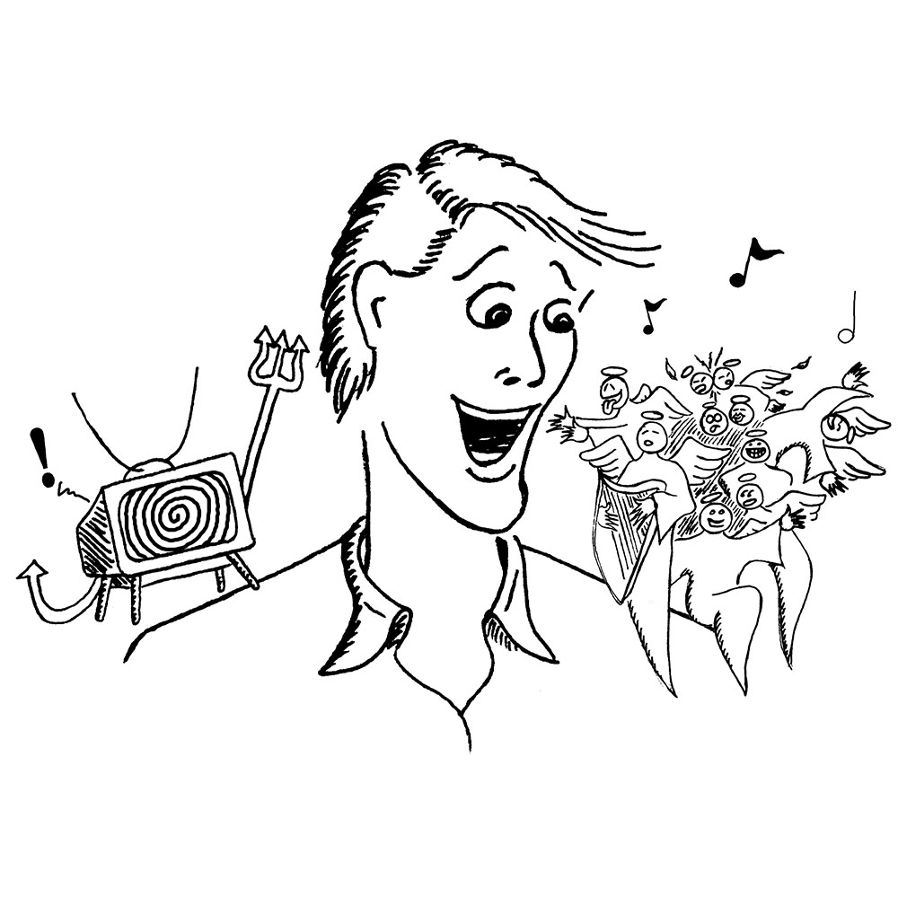

AIR Good, TV Bad (2000)
This image was used as advertising art for an Artists in Resonance concert. I'm very fond of this image, but it is unfortunately one of those ideas that I think is brilliant, but no one else seems to get. The idea was that we were holy angels making silly but beautiful music, trying to pull people away from their evil television sets and into our concert hall on a Saturday night. Obvious, right? Oh, well. I guess it's good that I went into engineering, instead of communications.
© W. Rhett Davis 2000